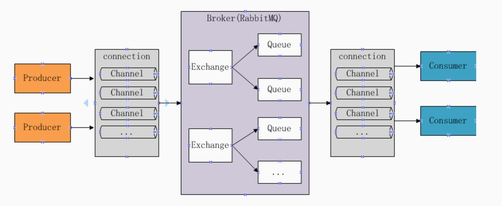
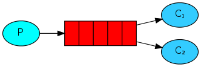
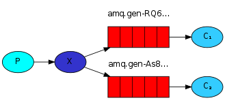
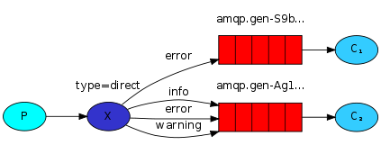
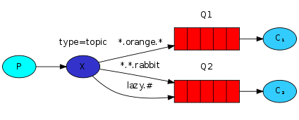

RabbitMq
erlang开发,基于amqp协议实现的消息队列
jms(java message service)只适用于java , amqp协议适用于所有系统

生产者(Producer) → 通道 → 交换机集群(Exchange)→队列(Queue) → 通道 → 消费者(Consumer)
发送消息
- producer与broker建立TCP连接
- producer与broker建立通道
- producer通过通道发送消息给broker , 由exchange进行转发
- exchange将消息转发到对应的消息队列
接受消息
- Consumer与broker建立TCP连接
- Consumer与broker建立通道
- Consumer监听指定的队列(Queue)
- 当有消息到达Queue时broker默认将消息推送给消费者
- 消费者接收到消息
安装
使用docker镜像
1 | docker run -di --name rabbitmq -p 5672:5672 -p 15672:15672 rabbitmq |
进入容器开启管理界面插件
1 | docker exec -it rabbitmq /bin/bash |
访问localhost:15672进入管理界面
原生代码
生产者
1 |
|
消费者
1 |
|
工作模式
1.Work Queues(工作队列模式)

- 一个生产者将消息发给一个队列
- 多个消费者共同监听一个队列
- 消息不能被重复消费
- 队列采用轮询方式将消息发送给消费者
和上面案例的区别就是启动了多个消费者
2.Publish/Subscribe(发布订阅模式)

- 一个生产者将消息发送给交换机
- 与交换机绑定的有多个队列,每个消费者监听自己的队列
- 生产者将消息发送给交换机, 由交换机将消息转发到绑定此交换机的每个队列 , 每个绑定交换机的队列都将接收到消息
- 如果消息发给没有绑定队列的交换机上则消息将丢失
与work queues的区别
- Publish/Subscribe可以定义一个交换机绑定多个队列, 一个消息可以发送给多个队列
- work queues 无需定义交换机 , 一个消息一次只能发送给一个队列
- 如果一个队列有多个监听的消费者 , 同样会是轮询消费
交换机类型
- fanout(发布,订阅模式)、
- topic(通配符模式)、
- direct(routing模式)、
- headers(header模式)
生产者
1 | package publish_subscribe; |
消费者
1 | package publish_subscribe; |
3.Routing(路由模式)

- 一个交换机绑定多个队列 , 每个队列设置routingkey , 并且一个队列可以设置多个routingkey
- 生产者将消息发给交换机，由交换机根据routingkey来转发消息到指定的队列
在哪一端声明队列,交换机,routingKey都可以 , 只要声明一次即可
生产者
1 | package routing; |
消费者
1 | package routing; |
4.Topics(通配符模式)

和路由模式的区别在于routing是精确匹配, topics是通配符匹配
1 | Test.#.Test.# |
生产者
1 | package Topics; |
消费者
1 | package Topics; |
5.RPC模式
springboot整合RabbitMQ
生产者
application.yml
1 | server: |
rabbitMQConfig
1 | package com.xuecheng.test.rabbitmq.config; |
1 |
|
消费者
1 | server: |
1 |
|